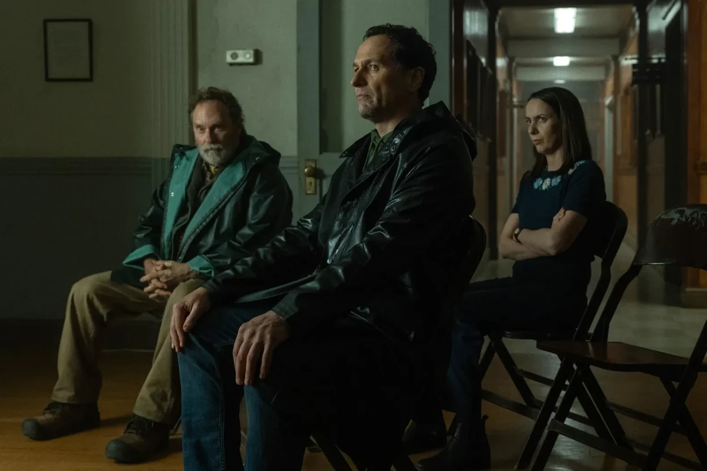
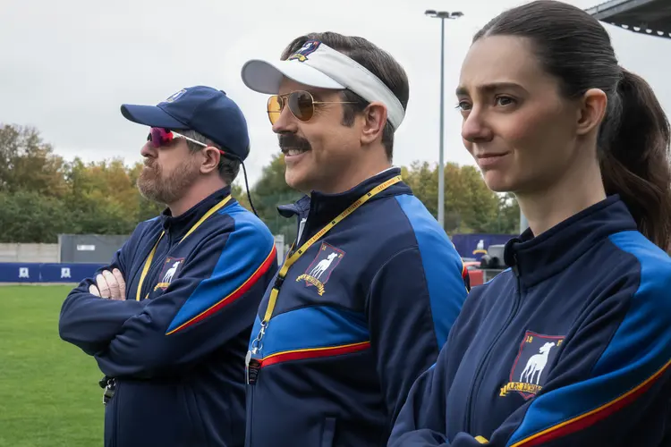

What I'm up to
This is my page on me. More on this later.
Currently Streaming
Below is a list of my current favorite shows I'm streaming (in no particular order).
- Widow's Bay
- Slow Horses
- Wednesday
- Ted Lasso
Widow's Bay

From left: Stephen Root, Matthew Rhys, and Kate O'Flynn in 'Widow's Bay.'Robert Clark/Apple TV'Widow's Bay' Director Hiro Murai Breaks Down Season 1
This show is an amazing blend of horror and comedy, with one of my favorite actors: Steven Root
Ted Lasso

Picture from Ted Lasso Ted Lasso Doesn't Know What to Do With Women's Soccer
Paragraph about Ted Lasso and why I chose it.
Ordered List
Things I gotta do today in order of importance...
- Teach this class
- Grade Web Design
- Finish my LED Project
- Eat dinner
Credits
This page was created by Chris Winikka © 2026.